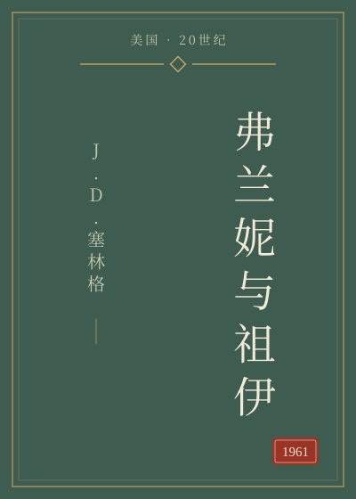
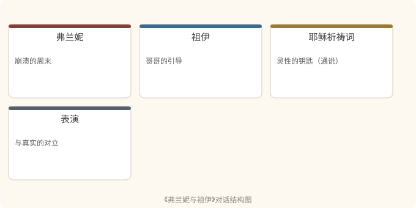

弗兰妮与祖伊
一、基本信息
| 作者 | 塞林格 |
|---|---|
| 成书/出版 | 1961年（作者页 B148 口径：弗兰妮与祖伊（1961）） J.D. Salinger — Encyclopaedia Britannica（百科全书） |
| 国别/地区 | 美国 |
| 时代 | 现当代 · 20世纪 |
| 体裁 | 中篇二部合刊 |
| 语言 | 英语 |

《弗兰妮与祖伊》对话结构图（主题·结构图）
二、创作背景
作者页（B148）：塞林格 major_works 载'弗兰妮与祖伊（1961）'（B148 作者页定位，详见 maitian 条核对）。
题材（通说待核）：格拉斯家最小的两兄妹——弗兰妮的精神危机与祖伊的引导（《耶稣祈祷词》）。
三、内容脉络
《弗兰妮》：大学周末的崩溃；《祖伊》：浴室与客厅的对话（通说待核）。
四、主要人物表
| 人物 | 身份 | 说明 |
|---|---|---|
| 弗兰妮 | 大学生 | （通说待核） |
| 祖伊 | 演员 | 引导者（通说待核） |
五、主题与艺术特点
- '耶稣祈祷词'与灵性（通说待核）。
- 表演与真实的对立（通说待核）。
- 格拉斯家族的续章（通说）。
六、影响与评论
- 作者页：塞林格格拉斯系列（B148 作者页口径）。
J.D. Salinger — Encyclopaedia Britannica（百科全书） - 禅与'灵性'书写的延续（通说）。
J.D. Salinger — Encyclopaedia Britannica（百科全书）
七、阅读建议
难点
- 宗教祷告词。
- 对话的密度。
- 《弗兰妮与祖伊》（人民文学出版社/译林出版社版本，通说待核）。
- 英文原版。
《九故事》后读。
八、待核实
- 两篇首刊（《纽约客》1955/1957说）核对。
- 弗兰妮/祖伊人名核对。
- '耶稣祈祷词'细节待核。
本页主要来源
塞林格的其他收录作品：麦田里的守望者